Home / Past papers / MLF End Term / this paper
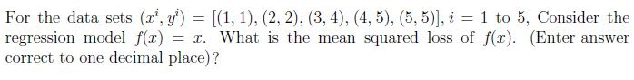
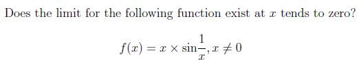
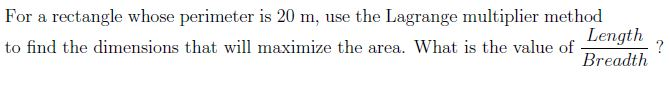
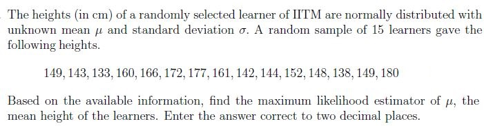
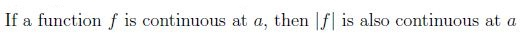
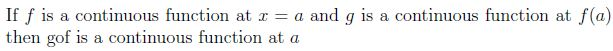
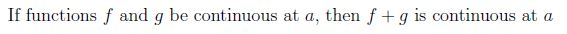
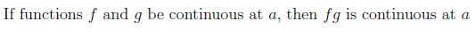
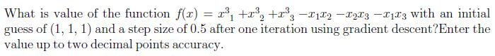
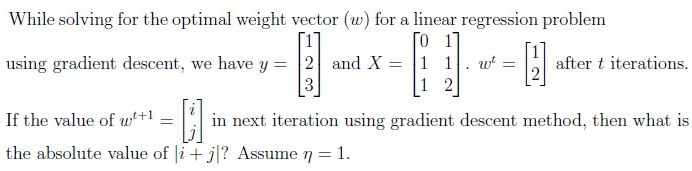
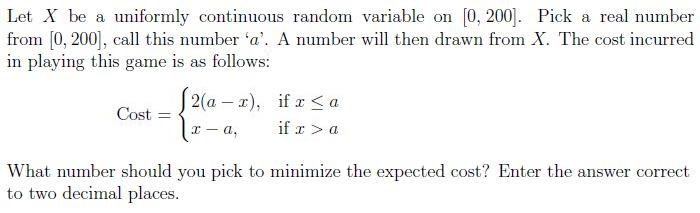
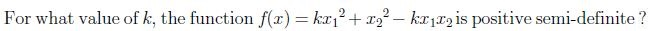
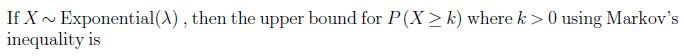
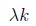
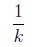
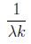
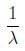
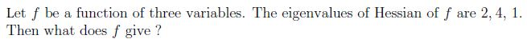
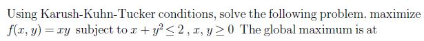
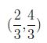
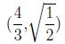
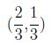
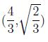
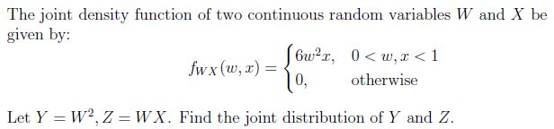
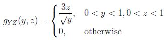
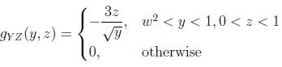
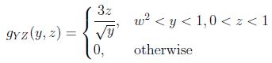
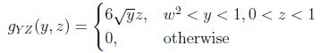
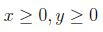
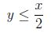
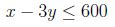
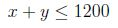
Auto-generated summary from the source site. Handy as a checklist; the lessons above explain each idea from scratch.
Here’s a structured summary of core topics, concepts, principles, and equations essential for the "Diploma Level: Machine Learning Foundations" exam, along with Mermaid knowledge graphs to visualize relationships.
Limits and Continuity:
Properties:
Lagrange Multipliers:
Steps:
Example: For a rectangle with perimeter , maximize area .
Gradient Descent:
Matrix Properties:
Column Space vs. Null Space:
Hermitian and Unitary Matrices:
Orthogonal Matrices:
Eigenvalues and Hessians:
Convexity:
Maximum Likelihood Estimation (MLE):
Markov’s Inequality:
Uniform Distribution:
Expected Cost Minimization:
Joint Distributions:
Transformation of Variables:
Key Properties:
Mean Squared Loss (MSL):
Gradient Descent for Regression:
Karush-Kuhn-Tucker (KKT):
Conditions for Optimality:
Positive Semi-Definite Matrices:
Example: For , find such that is PSD.
| Topic | Equation |
|---|---|
| Mean Squared Loss | |
| Gradient Descent | |
| Lagrange Multipliers | |
| Hessian Matrix | |
| Markov’s Inequality | |
| MLE for Normal Mean | |
| KKT Conditions | , |
| PCA Variance | |
| Positive Semi-Definite |
Focus on Equations:
Practice Calculations:
Understand Proofs:
PCA and Statistics:
Probability:
This summary covers all question types in the exam. Use the Mermaid graphs to visualize connections between topics, and prioritize equations for problem-solving.